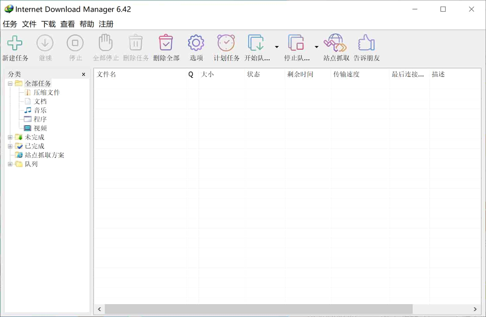

关于IDM

Internet Download Manager，全球最佳下载利器。Internet Download Manager (简称IDM) 是一款Windows 平台功能强大的多线程下载工具，国外非常受欢迎。
主要优势包括：
- 支持断点续传
- 支持嗅探视频音频
- 接管所有浏览器
- 具有站点抓取
- 批量下载队列
- 计划任务下载
- 自动识别文件名
- 静默下载
- 网盘下载支持
无论您是需要管理项目、组织思路还是提高工作效率，我们的软件都是您的理想之选。
主要功能
动态文件分割技术
把下载任务分成多个部分，多线程下载，榨干每一滴网速。
兼容性强
支持几乎所有的主流浏览器，包括chrome、火狐、edge等等，自动安装扩展插件。
多媒体下载
视频、音乐、文档都能下载，可以自动嗅探网页中的链接并下载。
界面淳朴
功能简单，只保留最基本的下载功能，没有植入广告。
下载软件
最新版本: v6.42.9
支持 Windows，绿色汉化版本
软件下载
2024.11.13日更新
新增v6.42.9版本，修复部分bug
2024.11.10日更新
新增v6.42.8版本，优化下载速度
常见问题
正版是收费的，本站提供的绿色汉化版本，仅供学习使用，请在24小时内删除
官网地址：https://www.internetdownloadmanager.com/
IDM本身不支持网盘下载，需要配合油猴脚本，获取网盘直链搭配使用
下载速度根据你的带宽和对应资源的带宽来定的，跟软件无关，如果用来下载网盘资源，也需要账户有VIP才能快速下载
绿化后如果出现报错弹窗，原因：
1.残留问题，请先点击卸载后，再次绿化
2.权限不够，管理员运行绿化工具，点击绿化
本软件绿化工具为使用果核绿化卸载软件生成
绿化工具可会被杀毒软件报毒，请关闭杀毒等安全软件后运行。